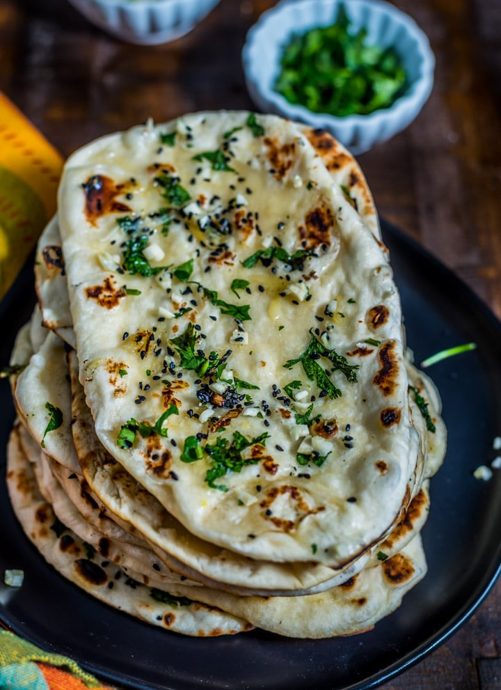

Butter Naan

Description :
Naan needs no introduction, it is the most popular Indian bread in the western world for sure. Most of the Americans that I talk to think Indian food=naan and curry. It is rather amusing that how the Indian food is perceived here.My mom never made naan at home, what she did make everyday was roti. And also parathas. We used to eat naan when we went to restaurants or at weddings. Sure we loved it but it was not a everyday bread.
Ingredients :
- Flour
- Yeast
- Oil
- Yogurt
- Milk
- Butter
Steps :
- In a bowl whisk together 3.25 cups (423 grams) of flour with 1 teaspoon (7 grams) salt and set aside.
- Now, add 1 cup (8 oz) warm water to the steel bowl of your stand mixer or to any large bowl. Add 1 tablespoon (13 grams) sugar and 2 teaspoons (7 grams) of active dry yeast. Stir and let it bloom for 5 to 10 minutes.
- After 10 minutes or so, the yeast mixture will be bubbly and froth on top. That's how we know what the yeast is active. If the mixture isn’t bubbly and frothy, discard and start over again.
- Now add 3 tablespoons (45 ml) of oil. I used avocado oil here.
- Add 1/3 cup (80 ml) milk and 2 tablespoons (30 grams) plain yogurt and mix using the paddle attachment of the stand mixer or use a wire whisk if not using a stand mixer.
- Start adding in the flour mix, little by little into the wet ingredients. Stir to combine.
- Start adding the remaining 3-4 tablespoons of flour (24-32 grams). Add 1 tablespoon at a time and add more if the flour is too sticky.
- Transfer the kneaded dough to a large bowl which has been greased with oil.
- Cover the bowl with a kitchen towel and let the dough rise in a warm place for around 60 to 90 minutes.
- Punch the dough to release the air.
- Divide dough into 8 equal parts. You may have to grease your hands while rolling the dough balls as the dough is sticky. I used a kitchen scale and each dough ball weighed around 100 grams. Cover the dough balls and rest for 15 minutes.
- After 15 minutes, heat a cast iron skillet on medium-high heat. Then start rolling the naan.
- Take one dough ball and with a rolling pin (grease the rolling pin with oil) first roll in length wise and then from the sides, around 10 to 12 inches long and 6 to 7 inches wide.
- Transfer the rolled naan onto the heated skillet. Let it cook for couple of minutes until you see bubbles on top.
- Then with the help of a tong, remove the naan from skillet, flip and transfer directly to the gas.
- Cook the naan for 15-20 seconds (directly on gas) on one side. Then flip and cook the other side until nicely golden brown from both the sides.
- Transfer to a plate and brush with melted butter. I always use salted butter to brush the naan.
Return to top
Return to main page